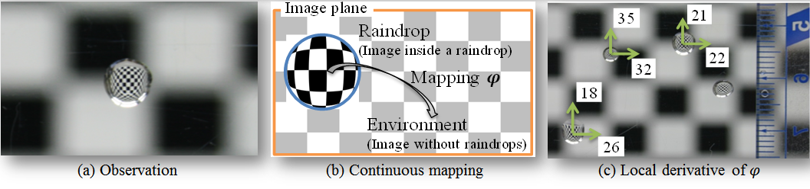

Adherent Raindrop Detection and Removal in Video
presented in CVPR 2013, IEEE TPAMI
Shaodi You, Robby T. Tan, Rei Kawakami, Yasukiro Mukaigawa and Katsushi Ikeuchi
Journal paper (12MB)
Conference paper (2.5MB)
Supplementary material (0.9MB): Derivation of raindrop contraction imagery
Video demo (16MB)
Video of experimental results
Poster (2.0MB)
Data
BibTex

Abstract: Raindrops adhered to a windscreen or window glass can significantly degrade the visibility of a scene. Detecting and removing raindrops will, therefore, benefit many computer vision applications, particularly outdoor surveillance systems and intelligent vehicle systems. In this paper, a method that automatically detects and removes adherent raindrops is introduced. The core idea is to exploit the local spatio-temporal derivatives of raindrops. First, it detects raindrops based on the motion and the intensity temporal derivatives of the input video. Second, relying on an analysis that some areas of a raindrop completely occludes the scene, yet the remaining areas occludes only partially, the method removes the two types of areas separately. For partially occluding areas, it restores them by retrieving as much as possible information of the scene, namely, by solving a blending function on the detected partially occluding areas using the temporal intensity change. For completely occluding areas, it recovers them by using a video completion technique. Experimental results using various real videos show the ef-fectiveness of the proposed method.
Challenges in Detecting Adherent Raindrops: Identifying adherent raindrops from images can be problematic due to a few reasons: Foremost, adherent raindrops have various shapes. Unlike opaque objects, they are transparent, making their appearance and thus intensity values vary depending on the environment. They suffer from out-of-focus blur due to their proximity to the camera. Moreover, most raindrops generate glare.

Modeling of Clear Raindrop: (a) A raindrop is a contracted image of the environment. (b) On the image plane, there is a smooth mapping ' starting from the raindrop into the environment. (c) The contraction ratios from the environment to a raindrop are significant.
Motion as Feature for Detection: A clear, unblurred adherent raindrop works like a fish-eye lens and significantly contracts the image of a scene. Consequently, the motion inside raindrops is distinctively slower than the motion of non-raindrops.
Modeling of Blurred Raindrop: The appearance and model of pixels on an image plane collecting light from A: environment, B: raindrop, C: both. (a) The light path model. Green light: the light coming from environment point; Blue light: the light refracted by a raindrop. (b) The raindrop plane cut the section of model in (a) when a raindrop is big. Green circle: the area of light collected. Blue circle: the raindrop. : percentage of light collected from the raindrop. (b¡¯) A raindrop plane cut the section when it is small. (c) The appearance of the 3 situations in (b). (c¡¯) The appearance of the 3 situations in (b¡¯).

Intensity Change as Feature for Detection: Unlike clear raindrops, blurred raindrops are mixtures of rays originated from the points in the entire scene. Thus, the intensity temporal derivative of blurred raindrops is significantly smaller than that of non-raindrops.

Detection Workflow

Detection Results
Raindrop Removal Results